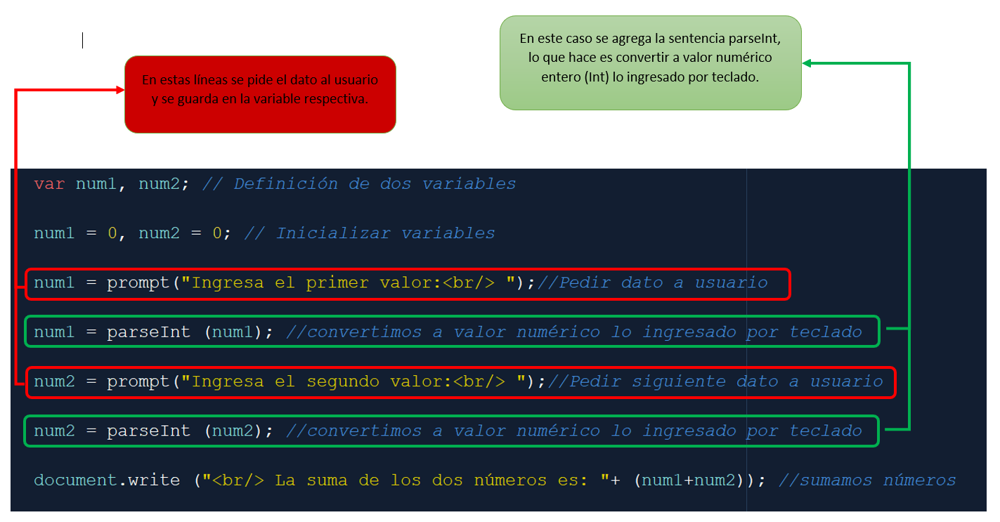
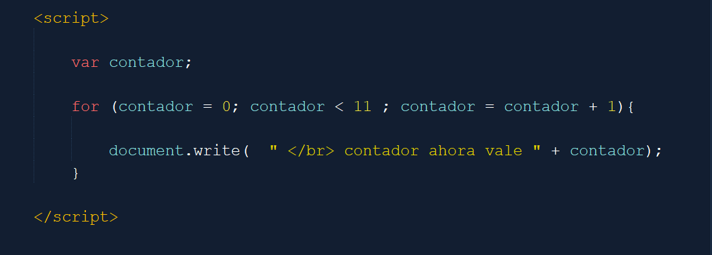
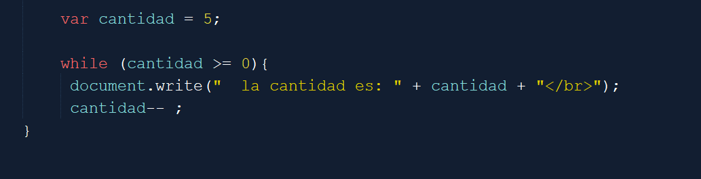

Variables y suma

Material complementario con capturas y ejemplos para trabajar variables, entrada por teclado, salidas, estructuras de control y configuracion de entorno.



DeclararVariable, ManejoDeVariables y LecturaPrompt: ejemplos vinculados a datos y entrada.SalidaConAlert y SalidaConDocument.Write: salidas básicas en JavaScript.Ciclo for, While y Switch: estructuras de control.NuevoProyecto e ideNetbeans: entorno y organización inicial.